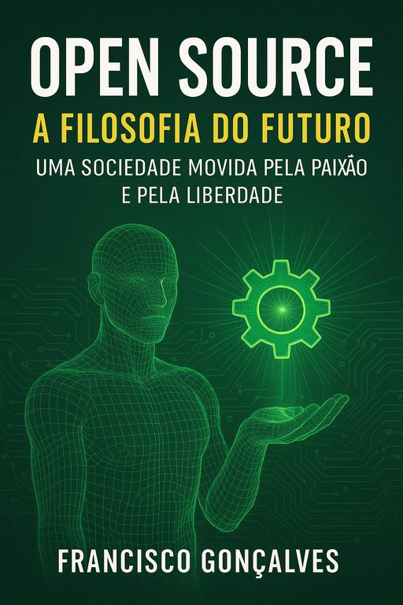

Publicado em 2025-06-28 22:06:03
Publicado em Fragmentos do Caos | Por Francisco Gonçalves
Num tempo em que o mundo parece vacilar entre a ganância desmedida e o desespero social, urge resgatar ideias com futuro. Há mais de uma década escrevi um artigo simples mas provocador: “Como seria o mundo se a economia fosse norteada por uma filosofia próxima à do movimento open-source?” Hoje, em 2025, essa pergunta continua mais atual do que nunca.
A resposta continua clara: seria um mundo mais aberto, acessível, democrático e humano.
O movimento open-source, longe de ser apenas uma prática técnica no universo do software, é uma verdadeira filosofia de vida. Um modo de ver o mundo onde o conhecimento é partilhado, a inovação é colaborativa, e a paixão supera o lucro como força motriz.
Veja-se o que se tem construído: sistemas operativos robustos e gratuitos, plataformas educativas abertas, ciência partilhada para combater pandemias e promover avanços na medicina, energias renováveis desenvolvidas com participação global, e até projectos de automóveis sustentáveis. A Google, a Wikipédia, o PLOS, o Creative Commons ou o Open Source Drug Discovery são só alguns exemplos desse espírito que rompe barreiras e cria pontes.
Num mundo orientado pelo espírito open-source:
Sim, talvez me chamem idealista. Mas prefiro ser idealista do que cúmplice da mediocridade instalada. Prefiro lutar por uma economia onde “ter princípios” não é incompatível com “gerar valor”.
Como dizia Simon Phipps, da ForgeRock:
"Ter princípios e ter lucro não são mutuamente exclusivos."
O open-source mostra-nos que é possível outra forma de viver e criar. Um mundo onde as comunidades ganham protagonismo. Onde a tecnologia serve a sociedade. Onde a paixão, a ética e a liberdade são o motor do progresso.
Hoje, mais do que nunca, precisamos de ideias claras, corajosas e transformadoras. E talvez o modelo open-source seja uma dessas ideias. Um farol entre as trevas de um mundo envenenado por algoritmos de consumo e modelos predatórios.
👉 Junta-te à mudança. Apoia, partilha, participa. Porque o futuro só será nosso se o escrevermos em comunidade.
🔗 opensource.org
🔗 fgonblog.blogspot.com
Artigo da autoria de Francisco Gonçalves baseado num seu artigo publicado no blogue pessoal em 2009.
"Num mundo norteado pela filosofia open-source, a inovação deixaria de ser um privilégio das corporações e passaria a ser um direito da humanidade. A paixão substituiria a avidez, e o conhecimento tornar-se-ia património comum — não mercadoria."
— Francisco Gonçalves, Fragmentos do Caos